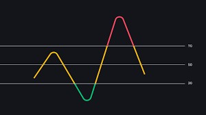
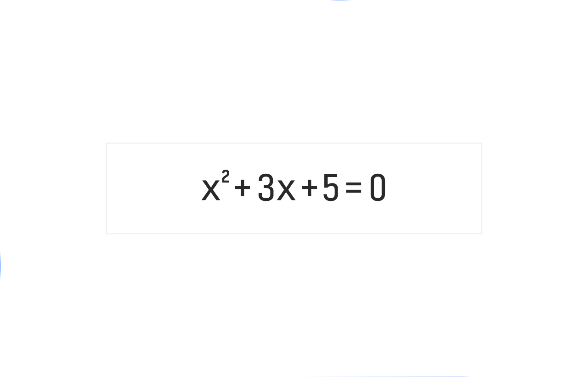

|
Dowon-Study https://github.com/Dowon-Study |
제가 고등학생때 했던 프로젝트를 모아 보았습니다!
지금 진행중인 프로젝트들은 오픈소스화를 하지 않았지만 여기에 있는 모든 프로젝트들은 모두 제 깃허브에 올라와 있습니다.
언제든지 구경하세요 !
클라우드 시스템
고등학교 내에서 안정적으로 사용할 수 있는 클라우드 시스템을 독자적으로 개발하였습니다. |
RSI 변동 지표에 따른 투자
파이썬으로 처음으로 차트기법을 구현해 보았었습니다. |
 |
|  | 방정식 이해 알고리즘
사용자가 문자형으로 방정식을 입력하면 이를 컴퓨터가 인식하는 알고리즘을 구현하였습니다.
이전에 나머지 계산기를 만드려고 했지만 이 알고리즘이 있어야 가능했기 때문에 만들게 되었습니다.
|
Use Framework by Bootstrap, jquery, fontawesome. | Designed by Dowon Yun